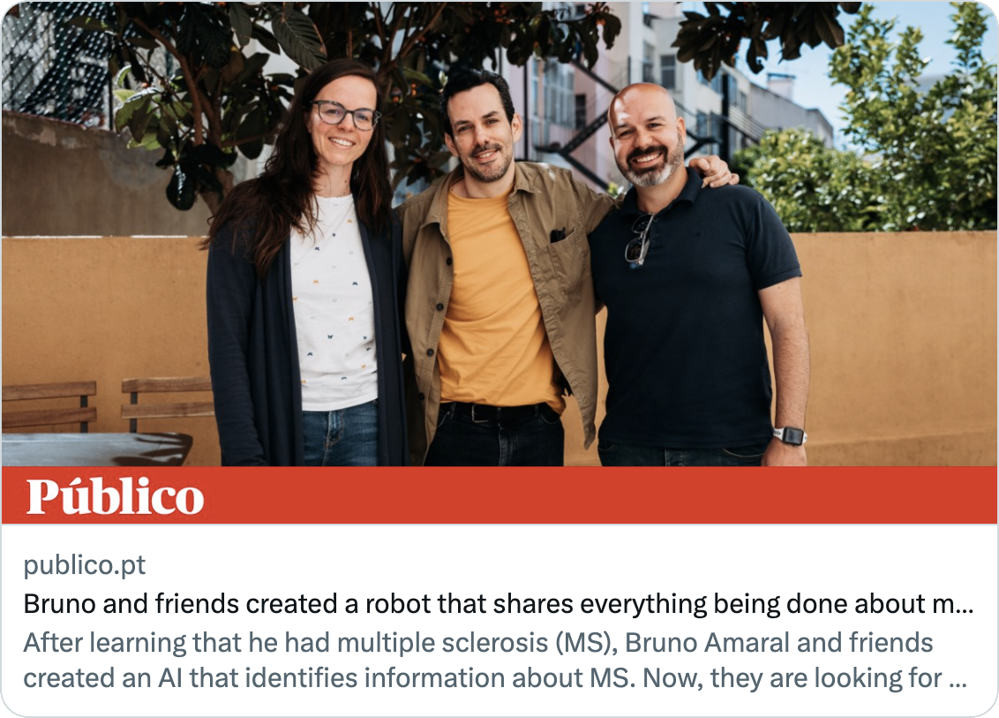

How it works
This website is an implementation of GregoryAI focused on Multiple Sclerosis research. We use this Artificial Intelligence assistant to find, filter, and distribute relevant research to Doctors and clinical researchers.


Annual Reports
We keep track of our activities and expenses for the sake of transparency. The report also includes our findings regarding Multiple Sclerosis.
2022 in ReviewProject news and development of new features
News and Updates

In the Media
8, May 2023. Content in Portuguese.
Público is a top-tier Portuguese newspaper, recognized for its comprehensive coverage of diverse topics. Since its launch in 1990, it's become a reliable source for national and international news.
PúblicoMeet the Team
Developers
Get free access to the articles and clinical trials, or contribute to develop GregoryAi.
Free API Documentation Github